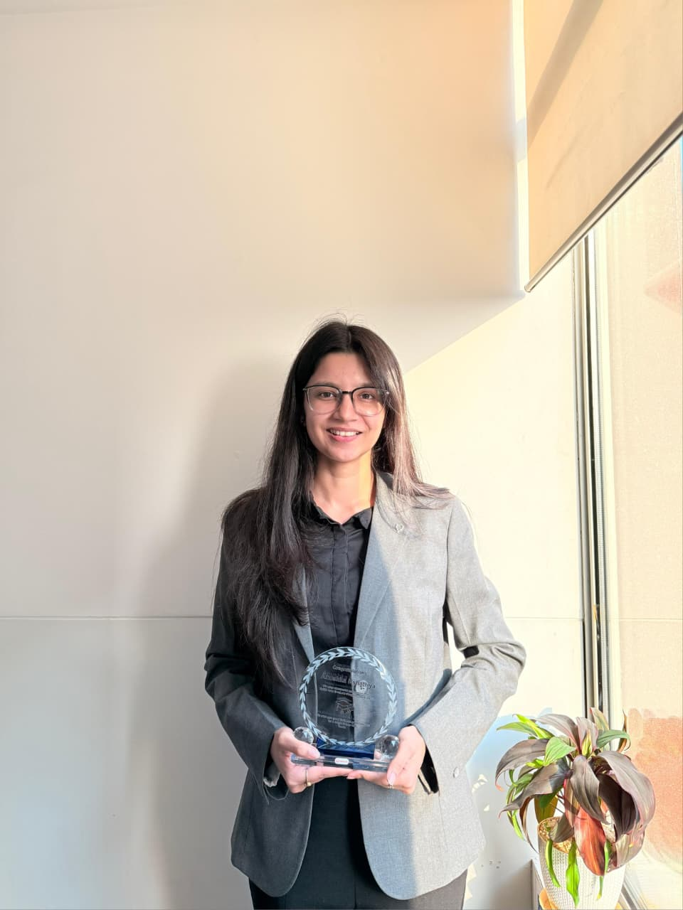

I am a Chemical Engineer with a published research paper, two years of industrial experience at one of the world's leading environmental solutions companies, and a clear conviction: that the most valuable engineering is the kind that solves problems the planet actually has.
At Veolia Water Technologies & Solutions, I work at the intersection of chemistry, commerce, and sustainability, managing specialty chemical solutions for India's oil and gas sector, building markets from the ground up, and coordinating across six internal functions to deliver results. Before that, I spent my final year researching bio-based alternatives to synthetic waxes, work that found its way into a research publication in Biomass Conversion and Biorefinery, Springer Nature.
My goal is straightforward: to combine technical rigour with commercial understanding and drive green technology initiatives that create practical, measurable change.
A strong foundation in chemical engineering principles, process chemicals, and water treatment technologies, applied across laboratory research and live industrial environments.
Proven ability to build markets, manage sales cycles, and engage with some of India's largest energy corporations, from first conversation to order execution.
A published researcher who brings the same analytical rigour to commercial challenges as to scientific ones.
Comfortable operating across marketing, finance, R&D, sourcing, operations, and management, translating between technical and business languages with ease.
Every professional and academic decision has been guided by a genuine commitment to engineering that works with the environment, not against it.
Institute of Engineering & Technology (IET), Lucknow — AKTU University
GPA: 8.0 / 10.0
My engineering journey began at IET Lucknow, one of the most prestigious government institutions under A. P. J. Abdul Kalam Technical University, where I didn't just study Chemical Engineering, I lived it. Over four years, I built a rigorous foundation across core disciplines, including thermodynamics, fluid mechanics, mass transfer, reaction engineering, and heat transfer, the fundamental language of how matter and energy interact at scale.
But what set my academic path apart was a conscious choice to look beyond the conventional. By pursuing electives in Sustainability of Environment and Petroleum Engineering, I positioned myself at the intersection of two of the most defining tensions of our time, the global demand for energy and the urgent need to meet it responsibly. This wasn't just a curriculum decision; it was the beginning of a professional philosophy.
My GPA of 8.0/10 reflects consistent academic performance, but the numbers only tell part of the story. My most formative lessons came not from textbooks, but from laboratories, project rooms, and real-world environments, where theory met complexity, and problem-solving became personal.
Beyond academics, I actively engaged with the broader engineering community through competitions, volunteering, and extracurricular initiatives, experiences that sharpened both my technical instincts and my ability to collaborate, lead, and contribute meaningfully.
DRDO
My first research exposure came not in a university laboratory, but at one of India's most prestigious scientific institutions, the Defence Research and Development Organisation (DRDO). Working within DEBEL's research environment introduced me to the rigour, discipline, and precision that serious scientific work demands.
The project focused on a question that sits at the heart of the global climate crisis: how effectively can carbon-based materials remove CO₂ from the atmosphere through adsorption? Working with materials including Granular Activated Carbon (GAC), Carbon Molecular Sieve (CMS), and Impregnated Activated Carbon, I designed and executed adsorption-desorption experiments using a packed bed reactor setup, measuring adsorption capacities under controlled flow conditions using mass flow controllers and gas analyzers.
The experience introduced me to the full arc of experimental research: hypothesis, apparatus setup, data collection, analysis, and interpretation.
Working at DRDO at the end of my second year was formative in a way that coursework alone could not be, it made the environmental stakes of chemical engineering feel immediate and real.
Key Takeaways: CO₂ adsorption science, packed bed reactor operations, mass flow control, gas analysis, experimental research methodology, and laboratory discipline.
Veolia Water Technologies & Solutions
South Asia Campus Internship Program, 2023
Outcome: Pre-Placement Offer (PPO) Secured
Veolia's Campus Internship Program places engineering students directly into live operational environments, and my two months within the Chemical & Monitoring Solutions (CMS) Operations function were anything but theoretical.
My project focused on understanding the Gas Cleaning Plant (GCP) circuit in the Steel Industry, a critical water and gas treatment system used in Blast Furnace and Basic Oxygen Furnace operations, and exploring its digitalization through Veolia's proprietary InSight platform. I gained hands-on exposure to the complete GCP circuit: from venturi scrubbers and thickeners to cooling towers, heat exchangers, and chemical dosing systems managing fouling control, pH regulation, and coagulation.
Beyond the technical depth, this internship introduced me to the real-world discipline of industrial operations, site safety protocols, cross-team communication, and the gap between classroom theory and field application.
The internship concluded with a Pre-Placement Offer, a direct invitation to return as a Graduate Engineer Trainee, which I accepted.
Key Takeaways: GCP process design, chemical dosing applications, Veolia's InSight digital monitoring platform, industrial site operations, and professional workplace conduct.
Graduate Engineer Trainee → Technical Sales Engineer
July 2024 – Present
Veolia Water Technologies & Solutions is one of the world's leading environmental solutions companies, operating at the intersection of water, energy, and sustainability across industries that keep economies running. Joining their South Asia Graduate Program (Batch 2024) as a Graduate Engineer Trainee wasn't just a job; it was an accelerated education in how complex industrial systems actually work, and how to sell solutions into them.
The program was structured around two six-month rotations, each designed to expose me to a different dimension of the business. What I didn't expect was how quickly I'd go from learning the language of the industry to speaking it fluently in front of clients.
Project: Product Sales Overview and Market Research for Mobile STP
My first rotation placed me within the Commercial & Institutional (C&I) segment, focused on understanding the market potential for Mobile Sewage Treatment Plants. On paper, it was a market research project. In practice, it was a crash course in how industrial sales actually functions, from identifying prospects to building the tools that convert interest into business.
I independently contacted 40+ builders and tracked over 300 construction projects across India to map new business avenues for Veolia's C&I segment. Simultaneously, I built a structured database of 50+ MEP consultants PAN India, creating channels that the sales team could leverage for future collaborations. I also gained hands-on exposure to core water treatment technologies, Membrane Bio-Reactors (MBR) and Reverse Osmosis (RO), deepening my technical grounding alongside the commercial work.
One initiative I'm particularly proud of: collaborating with the marketing team to develop case studies as strategic tools to build customer confidence, turning successful project outcomes into living proof points for the sales process.
Key Outcomes: Database of 300+ tracked projects, 50+ consultant contacts established, market potential analysis for Mobile STPs in the C&I segment, and case study development as a replicable marketing asset.
Project: Exploring Opportunities and Market Potential for CSM in Oil & Gas
My second rotation moved me into a more strategically complex arena, the Oil & Gas segment within Veolia's Chemical Solutions & Monitoring (CSM) division. This is where Veolia provides specialty process and utility chemicals to upstream, midstream, and downstream operations: fouling control, corrosion inhibitors, biocides, H2S scavengers, demulsifiers, and more.
I mapped 45+ upstream deals across India, conducted competitive pricing analysis across 11 process chemicals, and tracked 10 major upcoming projects in the Chemical Process Industries (CPI) segment. I worked directly with major Indian energy players supporting live proposals, vendor registration processes, and tender bids.
One standout contribution: I assisted in the strategic procurement of specialized chemicals for Uran's Water Treatment Plant, from initial proposal through to order execution. I also developed a comprehensive Standard Operating Procedure (SOP) for post-sales operations, designed to streamline the sales cycle for both new and experienced team members. A field visit to Refinery gave me an invaluable ground-level understanding of downstream operations.
Key Outcomes: 45+ deals mapped, competition analysis for 5 key specialty chemical applications, SOP developed, and active support across 5+ ongoing projects with India's largest energy corporations.
After completing the Graduate Program, I transitioned into a full-time role as a Technical Sales Engineer, a natural progression, but one that came with significantly expanded ownership.
My mandate today is to drive Veolia's penetration into the Indian upstream oil & gas market, one of the most complex, relationship-driven, and technically demanding segments in the industry. I manage the complete sales cycle: from identifying opportunities and reaching out to clients (both public sector giants like ONGC and OIL, and private players), to crafting technical proposals tailored to specific chemical challenges, through to post-purchase-order execution, dosing rate optimization, and EHS compliance.
The role is deeply cross-functional by nature. On any given week, I coordinate with marketing to strengthen brand visibility, work with sourcing to align inventory and delivery plans, engage with finance for payment tracking, consult the product application and R&D teams to identify the right chemical solution for each client's specific process challenge, and interface with operations for quality assurance and correct dosing. I also interact regularly with management on pipeline deals and costing decisions.
What makes this work meaningful to me goes beyond the commercial targets. Every time I help an oil & gas operation reduce corrosion, optimize process efficiency, or improve water quality compliance, I'm contributing, in a tangible, measurable way, to the sustainability goals that drew me to this field in the first place. Efficiency and environmental responsibility aren't opposing forces; this role has taught me they're deeply connected.
Key Achievements:
Department: Department of Chemical Engineering, IET Lucknow
Under supervision of: Dr. Dhananjay Singh
Team: Anushka Kshatriya, Rohan Gupta, Shreya Pandey
The Question That Started It All
The taro leaf, common, abundant, and largely overlooked, has a remarkable property: water doesn't stick to it. Droplets simply bead and roll away. This isn't accidental. It's the result of a complex epicuticular wax layer, one that has inspired biomimetic research into superhydrophobic surfaces for decades. What hadn't been studied in depth was how efficiently this wax could be extracted using accessible solvents, and whether it could serve as a viable, renewable alternative to the synthetic waxes that dominate industries from cosmetics to waterproof coatings. That gap is what our final year project set out to address.
Methodology
We employed Soxhlet extraction, a classical but rigorous solid-liquid extraction technique chosen for its efficiency, reproducibility, and lower solvent consumption compared to maceration. Fresh taro leaves sourced locally in Lucknow were shade-dried to remove moisture, crushed, and subjected to extraction using three solvents: chloroform and hexane (non-polar) and ethanol (polar). Each extraction ran for four cycles at 50°C using 120 ml of solvent, and the resulting extracts were evaporated and weighed to calculate yield percentages.
For characterization, we used two complementary analytical techniques:
- FTIR Spectroscopy, to identify the functional groups present in the crude wax, mapping absorption peaks to characteristic chemical bonds (C-H alkanes, C=O esters, aldehydes, and C-O stretching from alcohols and ethers).
- Thin Layer Chromatography (TLC), to separate and observe the component fractions under normal, ultraviolet, and infrared light, confirming the presence of both polar and non-polar compounds.
Analytical facilities were provided by the Centre for Advanced Studies, Lucknow.
Key Findings
The results told a clear story: solvent polarity is decisive in natural wax extraction. Non-polar solvents significantly outperformed the polar alternative. Hexane delivered the highest yield at 15.04%, followed by chloroform at 11.34%, while ethanol yielded a negligible 0.28%, confirming that taro's epicuticular wax is fundamentally non-polar in nature.
However, yield alone wasn't the full picture. While hexane extracted the most material, chloroform emerged as the more suitable solvent for industrial-scale production due to its higher wax content purity. FTIR analysis confirmed the presence of alkanes, aldehydes, esters, and alcohols in the extracted wax, all characteristic markers of natural wax, while TLC validated the co-existence of polar and non-polar compounds in the extract.
Most strikingly, the extracted wax demonstrated clear water-repellent behaviour, droplets glided freely across its surface, affirming its hydrophobic nature and its potential as a bio-based waterproofing material.
What began as a final year project evolved into a publication, extending our original work into a broader sustainability argument:
"Extraction of Plant Wax from Colocasia Esculenta Using Polar and Non-Polar Solvents: A Sustainable Approach"
Journal: Biomass Conversion and Biorefinery, Springer Nature | Published: March 2025
Co-authors: Mukul Sengar, Sunita Singh, Shreya Pandey, Rohan Gupta, Deepak Singh, Vinay Mishra, Mohd Saeed, Balendu Shekher Giri, Raj Kumar Arya, Dhananjay Singh
My Contribution: Methodology, Original Draft Preparation
The published paper frames the extraction of taro wax not just as a chemistry experiment, but as a sustainability proposition, positioning Colocasia esculenta as an agro-waste resource whose wax could replace synthetic, petroleum-derived alternatives in applications spanning cosmetics, waterproofing, coatings, and fabrics.
View Published Research Paper ↗This project crystallised something I had been sensing throughout my engineering education: that sustainability isn't a constraint on industrial progress, it's the direction it must move in. Finding a biodegradable, renewable, and affordable alternative to synthetic waxes from a plant most people consider an everyday vegetable felt like a small but genuine proof of that principle. It also planted the seed of a research orientation I've carried into my professional life, the conviction that the most valuable engineering solutions are the ones that work with natural systems, not around them.
Thermodynamics, fluid mechanics, heat/mass transfer, reaction kinetics, and process design, applied to bridge the gap between theory and operational reality.
Industrial applications including corrosion control, scale inhibition, H2S scavenging, demulsification, biocides, and fouling control for the oil and gas sector.
Practical expertise in Membrane Bio-Reactors (MBR), Reverse Osmosis (RO), Sewage Treatment Plants (STP), and Water Treatment Plants (WTP).
Proficient in Soxhlet extraction, Thin Layer Chromatography (TLC), and Fourier Transform Infrared Spectroscopy (FTIR) for applied research.
Mapping large industrial markets, tracking 300+ construction projects, collating 45+ upstream oil & gas deals, and conducting competitive pricing analysis.
Winflows (CRM), advanced Microsoft Excel (database curation & market tracking), and Microsoft PowerPoint for client presentations.
Translating between technical and commercial languages fluently across marketing, sourcing, finance, R&D, operations, and EHS.
Direct, adaptive communication from cold outreach (40+ builders, 50+ MEP consultants) to pitching chemical solutions to India's largest PSUs.
Managing complex, multi-party procurement environments, vendor registrations, tender submissions, and strategic chemical procurement.
Treating operational constraints as design problems with workable solutions, from lab troubleshooting to field market entry strategy.
I grew up in Ghaziabad. For seventeen years, it was home, and for seventeen years, it was also consistently ranked among the most polluted cities on the planet. The air carried a weight to it. On bad days, the sky didn't turn blue. You didn't need a report to tell you something was wrong; you felt it in your lungs, your eyes, the way mornings smelled.
Most people find their mission through inspiration. Mine came through something more immediate, the lived reality of what happens when industrial progress and environmental responsibility are treated as opposing forces. I don't want to see the world become what Ghaziabad already is. That's not a policy position. It's personal.
Everything that followed, the engineering degree, the research into bio-based wax alternatives, the work at Veolia optimising chemical processes for industrial clients, has been, in some way, a response to those seventeen years.
Two years into my career as a Technical Sales Engineer at Veolia Water Technologies & Solutions, I've developed a grounded understanding of how industry actually works, its pressures, its procurement cycles, its resistance to change, and the moments where the right technical solution can shift the equation entirely. I've worked across the oil and gas sector, navigated complex cross-functional environments, and seen first-hand how process optimisation and chemical efficiency directly reduce environmental footprint.
But I've also hit the ceiling of what experience alone can give me. The problems I want to solve, decarbonisation of industrial processes, the transition to renewable energy systems, the scaling of green technologies, require a depth of scientific and systems-level thinking that demands formal, rigorous advanced study.
That's what brings me to pursue an MS in Chemical Engineering with a strong focus on Sustainability and Renewable Energy.
In the near term, my goal is to deepen my technical expertise at the intersection of chemical engineering and sustainable process design — and emerge equipped to move beyond execution into strategy. Within two to three years of completing my master's, I aim to step into a role as a Project Manager or Sustainability Consultant, working with industries to design and implement transitions toward cleaner, more efficient operations. Not greenwashing — practical, measurable, engineered change.
Over the longer horizon, I want to be at the helm of a green technology company — one that develops and deploys solutions to real environmental problems at scale. Not a company built on promises, but one built on process, rigour, and impact that can be quantified. I'm not interested in grand declarations; I'm interested in the kind of work that quietly makes the world function better for the people living in it. My broader mission is simple, if not easy: to align my career with the development of the planet rather than against it.